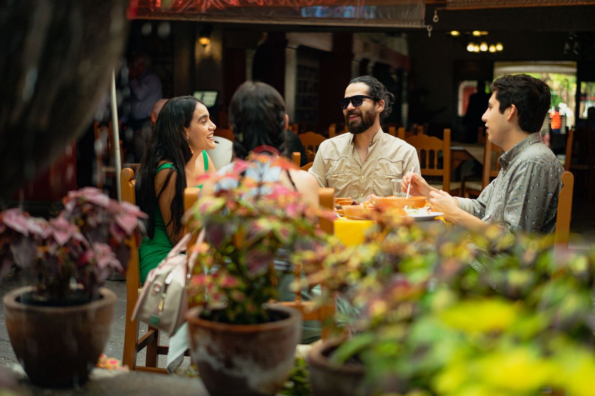
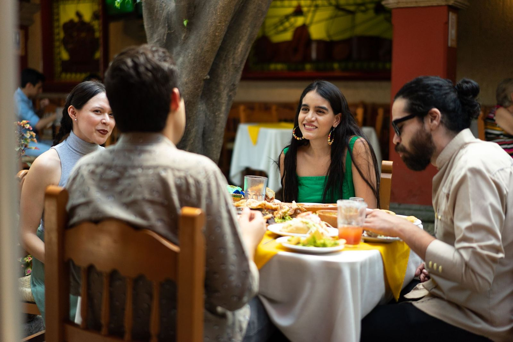
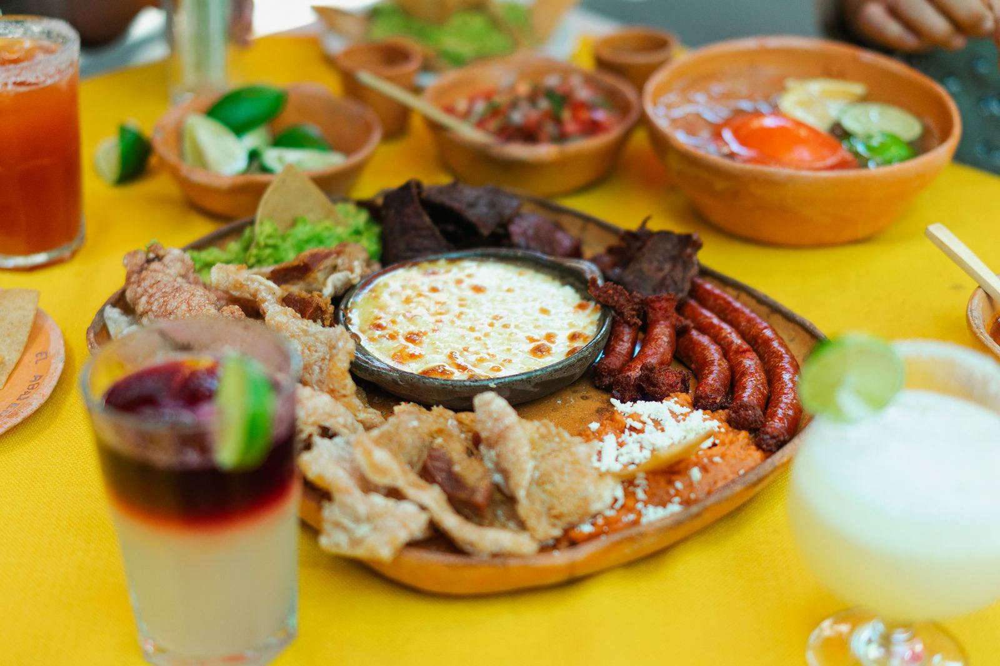
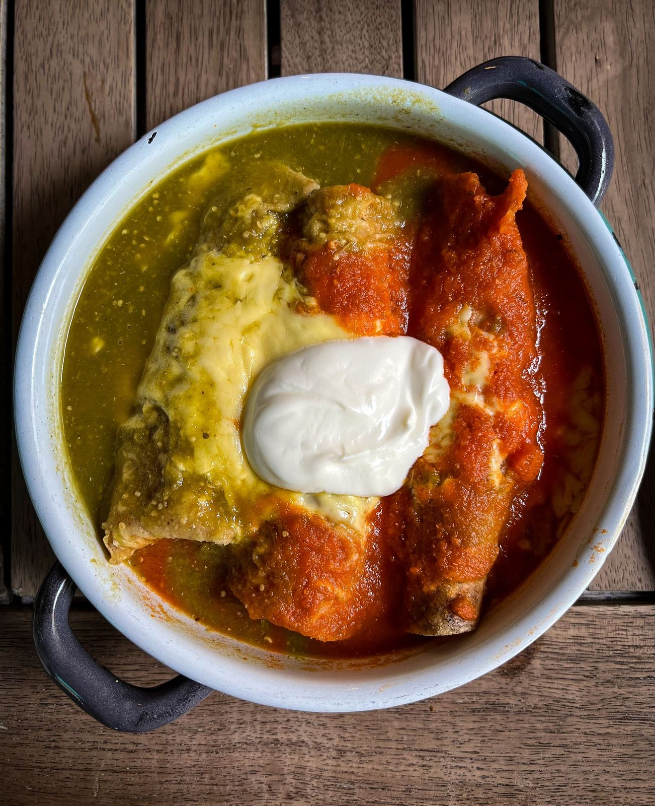
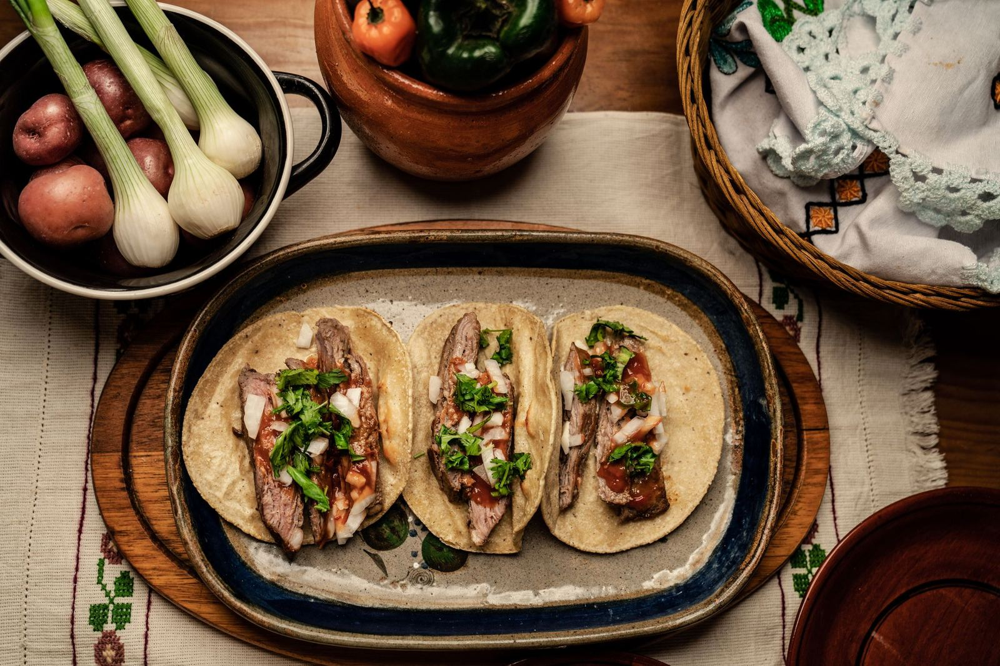

El sabor del Istmo de Tehuantepec, a unas cuadras del Jardín Zenea.
Cocina oaxaqueña hecha con calma, atendida como en casa.
Tortilla grande y crujiente, asiento, frijol, quesillo y la carne que elijas.
El platillo que más recomiendan quienes ya vinieron.
Antojitos del sur de Oaxaca que casi no encuentras en Querétaro.
Cifras públicas de Tripadvisor (consultadas en octubre de 2026).